2005
Violeta Ayala y Dan Fallshaw trabajan juntos por primera vez. Viajan a Mauritania y hacen Between the Oil and the Deep Blue Sea, un cortometraje documental de investigación sobre la corrupción en la industria petrolera.
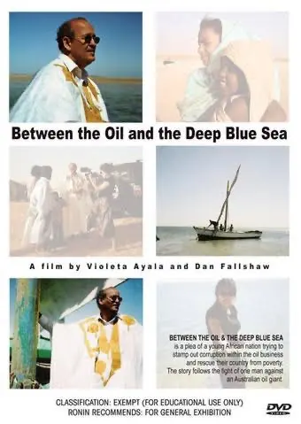
2006
Fundan United Notions Film.
2009
Stolen, un largometraje documental sobre la esclavitud en los campamentos de refugiados saharauis, se estrena en el Sydney Film Festival. Se proyecta en 80 festivales, entre ellos Toronto, gana 16 premios y se emite por PBS. La película causa una controversia internacional.
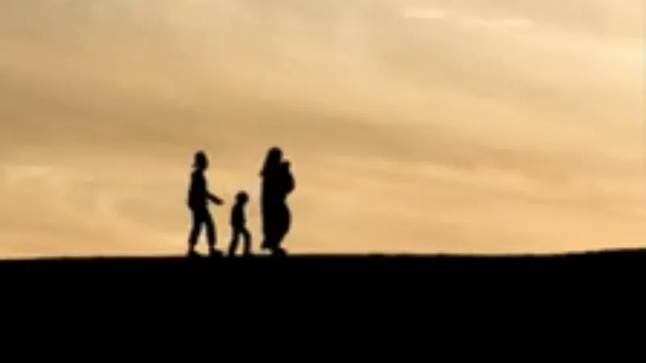
2015
The Bolivian Case se estrena en Hot Docs. Tres adolescentes noruegas son arrestadas en Bolivia con 22 kilos de cocaína, y la película sigue cómo los medios moldearon cada uno de sus casos. Es preseleccionada para los Premios Platino y los Premios Fénix y se distribuye en toda América Latina.
La productora Redelia Shaw se suma a UNF.
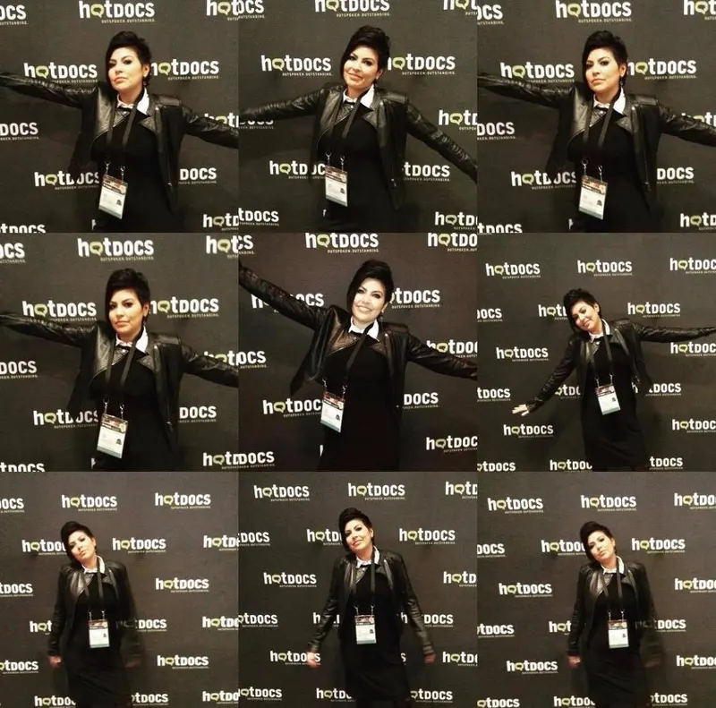
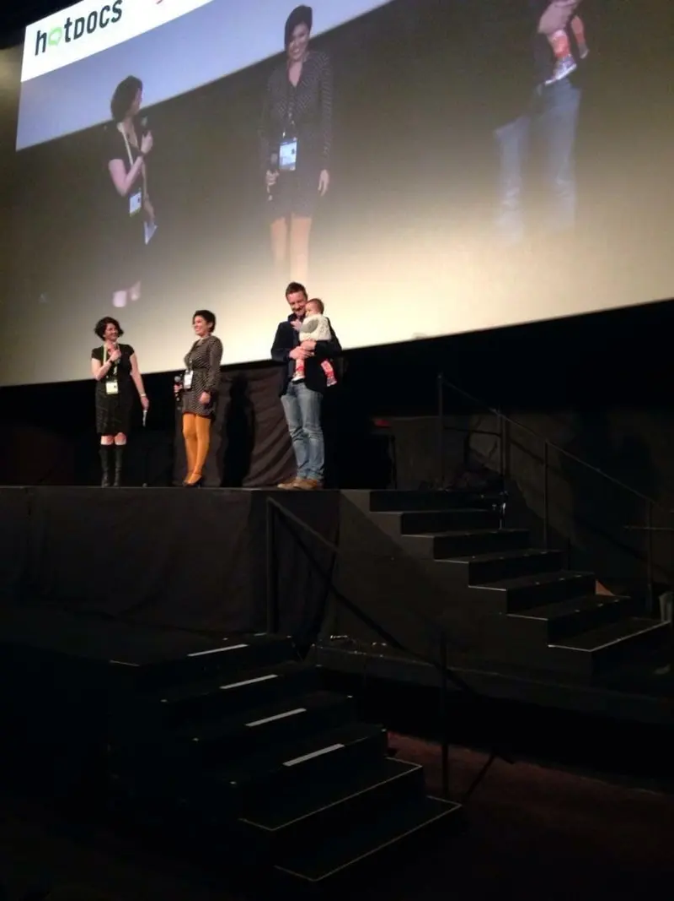
2016
Personas con discapacidad marchan por los Andes hasta La Paz para exigir una pensión. UNF filma la protesta.
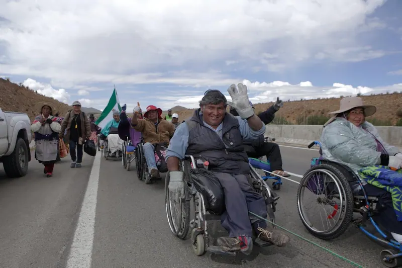
2017
The Fight, el cortometraje de esa marcha, es publicado en todo el mundo por The Guardian y gana un Premio Walkley. Después Bolivia aprueba una ley que otorga un pago mensual e inclusión laboral a las personas con discapacidad.
Cocaine Prison, filmada durante cuatro años dentro de la cárcel de San Sebastián en Cochabamba, se estrena en el Festival Internacional de Cine de Toronto. Gana el Premio del Público en Cinelatino, en Toulouse, se emite por PBS WORLD Channel y entra al catálogo de Amazon Prime.
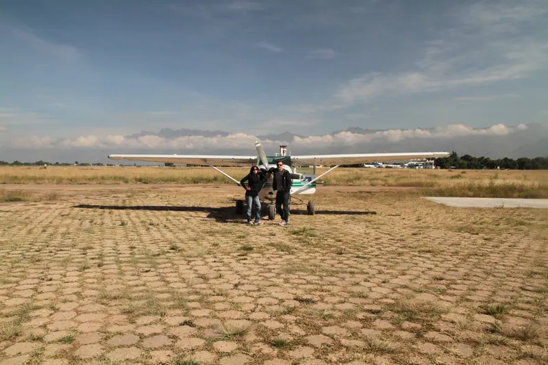
2021
Prison X, Chapter 1: The Devil and The Sun, se estrena en el Festival de Cine de Sundance. Es una experiencia de realidad virtual ambientada en una cárcel boliviana y una obra fundadora del Futurismo Neoandino. Es seleccionada para Cannes XR, Games for Change y SIGGRAPH.
Después de Prison X, UNF lanza koa.xyz, un laboratorio de creatividad computacional.
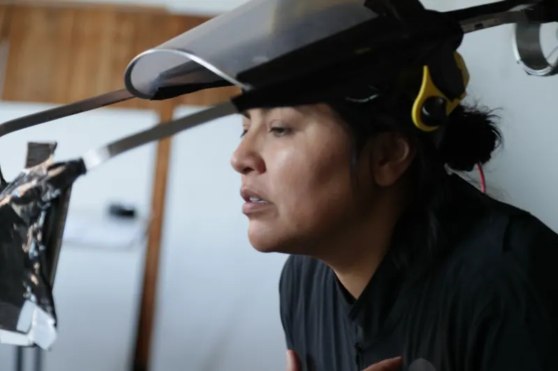
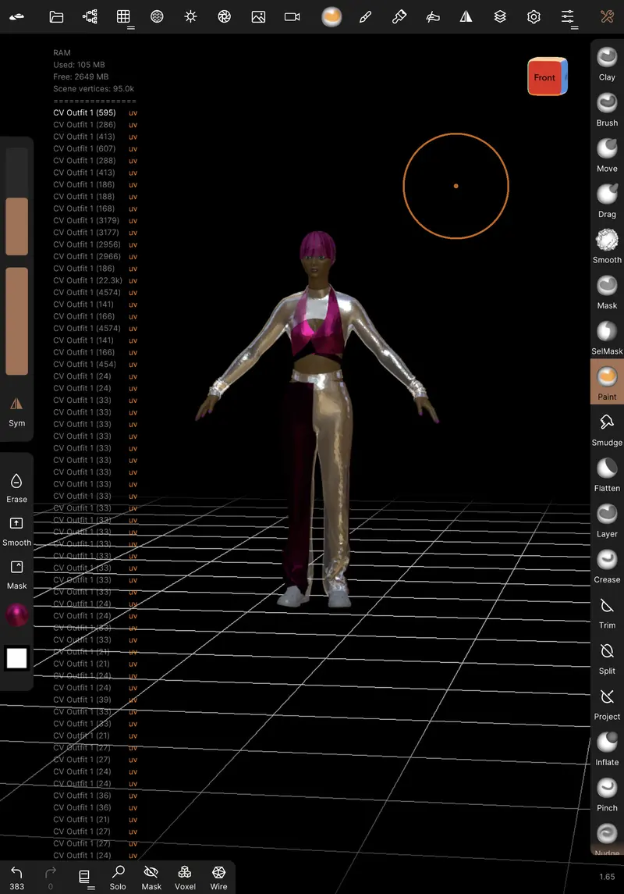
2022
El Martadero, un centro cultural de referencia en Cochabamba, invita a UNF a crear su primera instalación física. Violeta usa IA para imaginar a sus ancestras, las Awichas. Los ocho grandes retratos en acrílico entran a la colección oficial del centro.
2023
La Lucha, el largometraje de la marcha, se estrena en BlackStar Film Festival, en Filadelfia, y se proyecta en SXSW Sydney. Después gana el Premio NYWIFT a la Excelencia en Dirección en su estreno en Nueva York, en ReelAbilities y el Museum of the Moving Image.
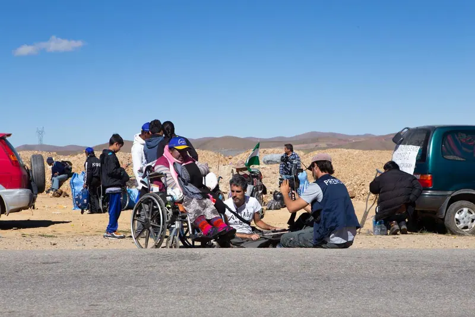
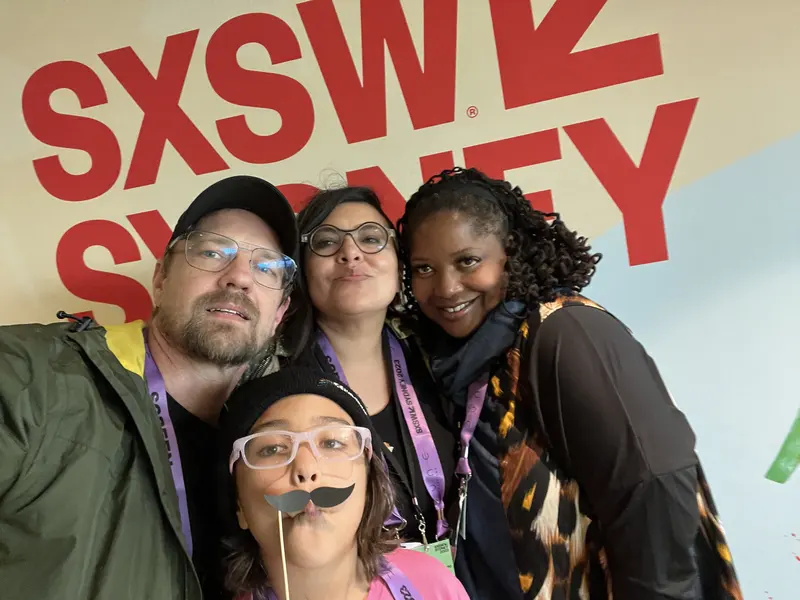
2024
Las Awichas se vuelve una instalación de realidad aumentada, coproducida con King's College London para GLOW. Se muestra en el Strand y en la galería Arcade, con tullmas tejidas por artesanos bolivianos y animales impresos en 3D.
La Lucha se estrena en Bolivia en las plazas principales de Cochabamba, La Paz y Potosí, con interpretación en lengua de señas. Asisten miles de personas.
La Lucha se emite por PBS.
Prison X sale en Steam.
Yasmeen Hitti, científica e ingeniera de sistemas creativos, se suma a UNF para desarrollar sistemas de IA encarnada.

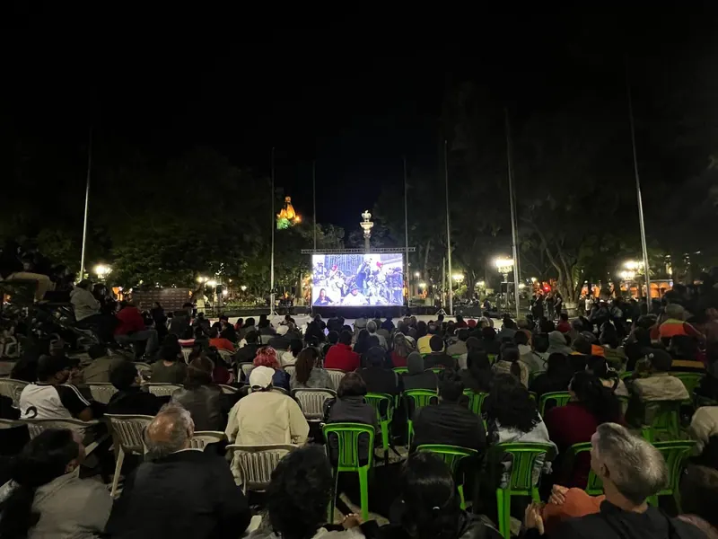
2025
Las Awichas gana Mejor Documental Interactivo / Inmersivo en los AIDC Awards. Las Awichas VR se estrena en Surreality, en la Universidad de Ciencia y Tecnología de Hong Kong (Guangzhou), en China.
Huk the Jaguaress, una instalación de IA creada en la residencia de Mila, el Instituto de IA de Quebec, se estrena en CPH:DOX, en Copenhague, y se muestra en NewImages Festival, en París. Es parte de Huk, un proyecto en curso.
Todo Nace Desde Lo Pequeño, una performance en vivo donde la cosmovisión andina se encuentra con la IA, se estrena en El Martadero, en Cochabamba.
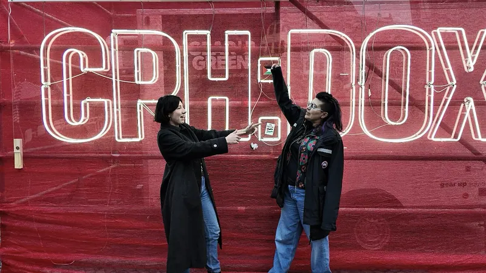
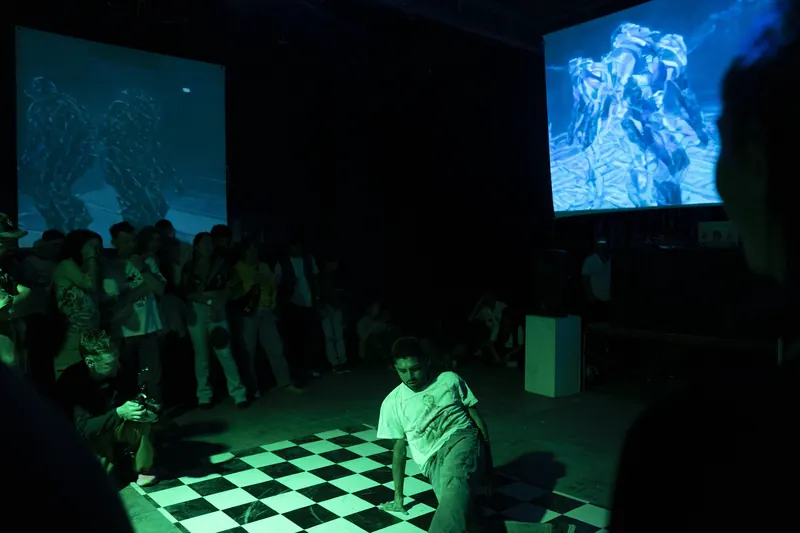
2026
UNF lanza sala.red, periodismo de investigación sobre tecnología desde Bolivia, y sala.video, distribución independiente de cine.
UNF está creando Yakumama, una instalación con una ballena robótica. Su estreno está previsto en MozFest 2026, en Barcelona.
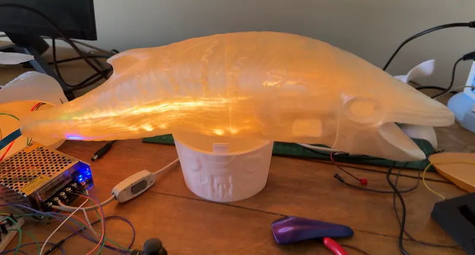